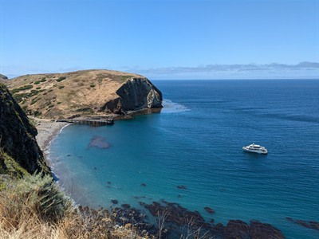
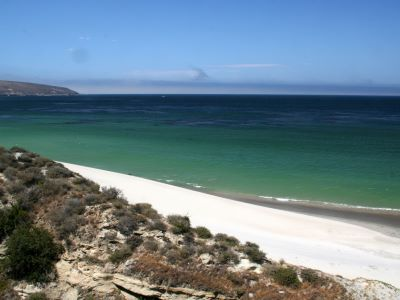
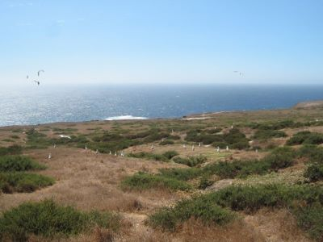
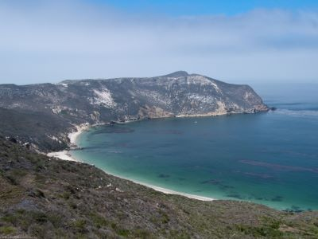

.jpg){kind=link}
Protected marine and island ecosystem featuring endemic wildlife, sea caves, hiking trails, and underwater reserves across five isolated islands.
General Information
Mainland Visitor Center: 8:30am to 5:00pm daily (closed Thanksgiving and December 25)
Santa Barbara Visitor Center: 10:30am to 4:30pm daily (closed Thanksgiving, December 25, January 1, and first Friday in August)
Transportation via Island Packers ferry: $63–$85 per adult depending on route and season
Camping fees vary by island and season
Summer: Ideal for kayaking, snorkeling, and whale watching
Fall: Warmest ocean temps and best visibility
Winter: Whale watching and dramatic sunsets
How to Get There
From Los Angeles (70 mi to Ventura Harbor): Take US-101 N to Victoria Ave in Ventura, then follow signs to Ventura Harbor Village where Island Packers ferry departs to Channel Islands National Park.
Overview
Channel Islands National Park protects five of the eight Channel Islands off the Southern California coast: Anacapa, Santa Cruz, Santa Rosa, San Miguel, and Santa Barbara. Although the islands sit within sight of one of the most populated regions in the country, they remain wild and almost entirely undeveloped. The park covers 249,561 acres, about half of it ocean, and the surrounding waters are protected as the Channel Islands National Marine Sanctuary. Thousands of years of isolation produced more than 145 plant and animal species found nowhere else on Earth, which is why the islands are often called the "Galápagos of North America."
The islands are also rich in human history. The Chumash and their ancestors lived here for more than 13,000 years, and Santa Rosa Island holds some of the oldest human remains found in North America. Later came Spanish explorers, beginning with Juan Rodríguez Cabrillo in 1542, followed by sheep and cattle ranching that lasted into the late 20th century. Anacapa and Santa Barbara Islands became a national monument in 1938, all eight Channel Islands became a UNESCO Biosphere Reserve in 1976, and the five islands became a national park on March 5, 1980. Today, visitors take a boat across the Santa Barbara Channel to hike windswept trails, kayak into sea caves, snorkel in kelp forests, camp under dark skies, and look for whales, dolphins, seabirds, and the tiny island fox.
Park Sections
Each island is its own section of the park, and each is reached only by boat or private plane. Anacapa Island, about an hour by boat from the mainland, is the closest. It is a chain of three narrow islets known for its sea cliffs, the Anacapa Light Station, and the view from Inspiration Point. Santa Cruz Island is the largest island in California and the park's most visited. Boats land at Scorpion Anchorage on the east end and at Prisoners Harbor on the north shore. The Nature Conservancy owns and manages the western 76 percent of the island, which is closed to the public without a permit. Santa Rosa Island, about a 2.5- to 3-hour boat ride away, has white sand beaches, rare Torrey pines, and deep canyons. Remote San Miguel Island is the farthest west and is famous for its huge seal and sea lion colonies at Point Bennett. Small Santa Barbara Island lies far to the south. Its landing dock has been damaged in recent years, and access by boat has been limited.
Sightseeing and Exploring the Park
There are no roads or scenic drives for visitors on the islands, so Channel Islands is explored on foot, by kayak, or from the deck of a boat. The boat ride itself is one of the park's highlights, as passengers often spot common dolphins, sea lions, and whales crossing the channel. Popular viewpoints include Inspiration Point on Anacapa, which looks down the length of the islets, and Cavern Point and Potato Harbor on Santa Cruz, both perched on cliffs above the ocean. On Santa Rosa, Skunk Point and the Torrey Pines Trail have wide ocean views, and Black Mountain offers a panorama of the island's interior. On the mainland, the Robert J. Lagomarsino Visitor Center in Ventura has an observation tower with views of the islands on clear days.
Hiking
Each island has trails ranging from short, easy walks to long, exposed treks. On Anacapa, a level 2-mile loop leads to Inspiration Point, Cathedral Cove, and the lighthouse. On Santa Cruz, the Cavern Point Loop (2 miles) and Potato Harbor (5 miles round trip) are popular half-day hikes from Scorpion Anchorage, and the longer hike to Smugglers Cove (about 7.5 miles round trip) crosses the island's east end to a quiet cobblestone beach. On Santa Rosa, the Torrey Pines Trail, Water Canyon, Lobo Canyon, and Black Mountain show off the island's varied landscapes, along with the historic Vail and Vickers Ranch near the pier. On San Miguel, the trail to the caliche forest and the 16-mile round-trip hike to Point Bennett require hiking with a park ranger. Island trails have little or no shade, water, or services, so hikers must carry everything they need and allow plenty of time to make their boat back.
Other Activities
Channel Islands is one of the best places in California for sea kayaking. The coast of Santa Cruz Island is lined with hundreds of sea caves, including Painted Cave, one of the largest and deepest sea caves in the world. Kayakers should go with an authorized outfitter, such as Channel Islands Adventure Company or Santa Barbara Adventure Company, which offer guided kayak and snorkel trips from Scorpion Anchorage. Snorkeling and scuba diving are excellent in the park's kelp forests, which are home to bright orange garibaldi, sea stars, and sea lions. The water is clearest in late summer and fall. Island Packers also runs whale-watching cruises, with gray whales passing in winter and spring and blue and humpback whales feeding in summer and fall. Other activities include tidepooling, backpacking, birdwatching, and fishing in areas outside the marine reserves.
Flora and Wildlife
The park is known for its endemic wildlife. The island fox, a cat-sized fox found only on the Channel Islands, nearly went extinct in the 1990s. A recovery program brought it back, and it is now commonly seen at campgrounds and along trails on Santa Cruz and Santa Rosa. Santa Cruz Island is the only home of the bright blue island scrub-jay. Santa Rosa Island protects one of only two natural groves of the rare Torrey pine. In late winter and spring, Anacapa's giant coreopsis bursts into bright yellow blooms, and the island hosts the world's largest breeding colony of western gulls. Anacapa and Santa Barbara Islands are also the main breeding grounds for California brown pelicans in the western United States. Marine mammals are everywhere: tens of thousands of seals and sea lions gather at San Miguel's Point Bennett, and dolphins and whales are often seen from the boats. Visitors should keep food in the fox-proof storage boxes and never feed wildlife.
Access
The park lies off the coast of Ventura and Santa Barbara Counties, roughly 70 miles northwest of Los Angeles. The islands can be reached only by boat or private plane. Most visitors ride Island Packers, the park's official boat concessioner. Its boats leave from Ventura Harbor in Ventura and Channel Islands Harbor in Oxnard and serve all five islands, with Anacapa and Santa Cruz having the most frequent trips. Boats fill up on weekends and in summer, so reservations are recommended well in advance. Landings depend on sea conditions, and trips are sometimes canceled or changed to wildlife cruises when the ocean is rough. Private boaters can also visit, but landing on some islands requires a permit. The nearest major airports are in Los Angeles, Santa Barbara, and Burbank.
Seasons
The park is open all year, and the mild coastal climate makes any season a good time to visit. In winter and spring, the islands turn green, wildflowers and giant coreopsis bloom, and gray whales migrate past the islands. Winter storms and high winds cancel boat trips more often during this season. Summer is the busiest season and the best time for kayaking and camping, although morning fog is common in early summer, and blue and humpback whales arrive to feed. Fall often brings the warmest, calmest weather, the clearest water for snorkeling and diving, and fewer crowds. Island Packers runs fewer trips in winter, and trips to the outer islands are more limited outside the summer season. A large wildfire burned much of Santa Rosa Island in May 2026, closing it to visitors for weeks. Check the NPS website for current island conditions before planning a trip.
Camping and Lodging
There is no lodging on the islands, but each of the five islands has a primitive campground, and campsites must be reserved on Recreation.gov. The most popular is Scorpion Ranch Campground on Santa Cruz Island, a short walk from the boat landing in a shady, tree-lined canyon. The campgrounds on Anacapa, Santa Rosa, San Miguel, and Santa Barbara are more remote, and campers must carry all their gear, food, and water (water is available only at Scorpion Ranch and Santa Rosa). Backcountry camping is also allowed at Del Norte on Santa Cruz Island and on Santa Rosa's beaches in season. On the mainland, Ventura and Oxnard have hotels right at the harbors where the boats depart, and Santa Barbara, Camarillo, and Carpinteria are within an easy drive. Popular beach camping is available nearby at Emma Wood State Beach, Carpinteria State Beach, and Point Mugu State Park.
Visitor Centers
The park's main visitor center is the Robert J. Lagomarsino Visitor Center at Ventura Harbor, a short walk from the Island Packers dock. It has exhibits on all five islands, a tidepool display, a film about the park, a bookstore, and an observation tower. The Outdoors Santa Barbara Visitor Center at the Santa Barbara Waterfront also has exhibits about the park and the marine sanctuary. On the islands, small visitor contact stations and museums at Scorpion Ranch on Santa Cruz and on East Anacapa share the islands' natural and ranching history, and rangers or volunteers often greet boats as they arrive.
Channel Islands Ferry Excursions
A ferry excursion to Channel Islands National Park is one of the most popular ways to experience this remote collection of islands located off the coast of Southern California. Public transportation to the islands is provided by Island Packers, the park's official boat concessionaire. Visitors can choose from several island destinations, including Santa Cruz Island, Anacapa Island, Santa Rosa Island, and San Miguel Island, each offering unique landscapes, wildlife, hiking opportunities, and marine environments.
For first-time visitors, Santa Cruz Island is the most popular destination due to its accessibility, extensive trail network, sea cave opportunities, and excellent wildlife viewing. The ferry ride itself is often part of the experience, with opportunities to observe dolphins, sea lions, seabirds, and seasonal whale migrations while crossing the Santa Barbara Channel. Once on the island, visitors can enjoy hiking, kayaking, snorkeling, wildlife photography, picnicking, and exploring one of California's most pristine island ecosystems.
Popular Island Ferry Excursions
| Destination | Travel Time | Overview |
|---|---|---|
| Santa Cruz Island (Scorpion Anchorage) | Approximately 1 Hour | Most popular destination featuring scenic hiking trails, sea caves, island foxes, and coastal viewpoints. |
| Anacapa Island | Approximately 1 Hour | Known for dramatic cliffs, the historic lighthouse, Arch Rock, seabird colonies, and short scenic hikes. |
| Santa Rosa Island | Approximately 3 Hours | Features expansive beaches, coastal bluffs, rare wildlife, and a more remote wilderness experience. |
| San Miguel Island | Approximately 4 Hours | The most remote island, famous for rugged landscapes and large colonies of seals and sea lions. |
What's Included
- Round-trip ferry transportation from Ventura Harbor or Oxnard Harbor.
- Access to Channel Islands National Park with no separate park entrance fee.
- Wildlife viewing opportunities during the crossing.
- Free time to hike, explore, picnic, and enjoy the island.
- National Park Service visitor information and island orientation.
Pricing Overview
| Destination | Typical Adult Round-Trip Fare |
|---|---|
| Anacapa Island | From approximately $63 |
| Santa Cruz Island | From approximately $63 |
| Santa Rosa Island | Approximately $138 |
| San Miguel Island | Typically $140-$150 |
The average adult ferry fare across the primary Channel Islands destinations is approximately $100-$105 per person. Prices vary depending on destination, season, departure location, and trip length. Additional costs may apply for guided kayaking tours, camping permits, equipment rentals, and specialty excursions.
Popular Add-On Experiences
- Sea Cave Kayaking on Santa Cruz Island, including exploration of some of the world's largest sea caves.
- Guided Snorkeling in kelp forests and marine conservation areas.
- Wildlife Cruises focused on whales, dolphins, seabirds, and marine mammals.
- Island Camping on selected islands for multi-day adventures.
Best Ferry Excursion for First-Time Visitors
For most visitors, the Santa Cruz Island Day Trip offers the best overall Channel Islands experience. It combines a relatively short ferry ride, excellent hiking opportunities, island fox sightings, scenic coastal views, and access to world-class sea cave kayaking adventures. The destination provides a balance of adventure, wildlife viewing, and accessibility that makes it ideal for first-time visitors.
This article uses material from the Wikipedia article "Channel Islands National Park", which is released under the Creative Commons Attribution-Share-Alike License 3.0. It also uses material from nps.gov, including "Channel Islands National Park", "Island Transportation", and "Santa Rosa Island Fire". Transportation, excursion, and visitor information is based on details provided by Island Packers, the official boat concessionaire for Channel Islands National Park.
Featured Locations
-400.jpg)
National Marine Sanctuaries, Public domain, via Wikimedia Commons; Image Size Adjusted
Anacapa Island
Volcanic island composed of three narrow islets featuring dramatic sea cliffs, natural bridges, and rich marine and bird life.
Robert J. Lagomarsino Visitor Center
Modern visitor facility providing exhibits, panoramic vistas, and orientation information for exploring expansive desert landscapes and coastal park environments.

Joyful Graphics, CC BY-SA 4.0, via Wikimedia Commons; Image Size Adjusted

Santa Cruz Island
Largest island in Channel Islands National Park with island's coastline having steep cliffs, large sea caves, coves, and sandy beaches

Joyful Graphics, CC BY-SA 4.0, via Wikimedia Commons; Image Size Adjusted
Santa Rosa Island
Expansive island featuring rolling hills, secluded beaches, rare Torrey pines, and archaeological sites accessible by ferry and ideal for hiking, camping, and wildlife viewing.

Joyful Graphics, CC BY-SA 4.0, via Wikimedia Commons; Image Size Adjusted
Santa Barbara Island
Small volcanic island with steep cliffs, native flora, and abundant seabird nesting grounds, accessible only by boat and offering primitive hiking trails and camping.

Joyful Graphics, CC BY-SA 4.0, via Wikimedia Commons; Image Size Adjusted
Santa Miguel Island
Remote windswept island plateau featuring dramatic cliffs, endemic wildlife, and archaeological sites accessible only by ranger-led hikes.